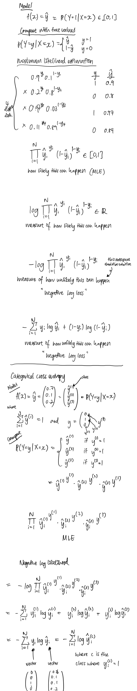

Loss functions
MSE (regression)
General:
univariate, 1 example
univariate, multiple examples
?
multivariate, 1 example
multivariate, multiple examples
Cross entropy loss (classification)
Binary cross entropy / negative log loss
Formulated by Claude Shannon, this loss function compares how different two distributions (true and predicted) are.

Gradient descent with
- Logistic regression (= binary cross entropy)
- Softmax regression ( = softmax cross entropy)
💡 Note that softmax cross entropy is a generalisation of binary cross entropy.
is vector of logits with classes.
General:
Binary cross entropy (2-class)
univariate, 1 example
univariate, many examples
multivariate, 1 example
multivariate, many examples
With L2
MLE & MAP
- All the loss functions below use MLE (???)
- L2 regularisation (not sure about L1) is actually finding the of a distribution whose prior on is a normal distribution! (MAP interpretation is we are maximising a combination of prior and likelihood functions).
L1
L2
Given , , , , , find the final after one SGD update.
Label smoothing
Binary / categorical cross entropy:
Cross entropy with label smoothing regularisation:
with smoothing parameter such that